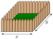
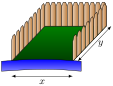
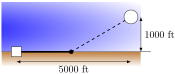
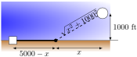
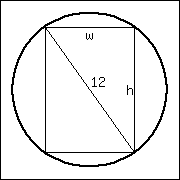

In Section 3.1 we learned about extreme values — the largest and smallest values a function attains on an interval. We motivated our interest in such values by discussing how it made sense to want to know the highest/lowest values of a stock, or the fastest/slowest an object was moving. In this section we apply the concepts of extreme values to solve “word problems,” i.e., problems stated in terms of situations that require us to create the appropriate mathematical framework in which to solve the problem.
We start with a classic example which is followed by a discussion of the topic of optimization.
Example4.3.2.Optimization: perimeter and area.
A man has \(100\) feet of fencing, a large yard, and a small dog. He wants to create a rectangular enclosure for his dog with the fencing that provides the maximal area. What dimensions provide the maximal area?
One can likely guess the correct answer — that is great. We will proceed to show how calculus can provide this answer in a context that proves this answer is correct.
It helps to make a sketch of the situation. Our enclosure is sketched twice in Figure 4.3.3, either with treetop grass and nice fence boards or as a simple rectangle. Either way, drawing a rectangle forces us to realize that we need to know the dimensions of this rectangle so we can create an area function — after all, we are trying to maximize the area.

Figure4.3.3.A sketch of the enclosure in Example 4.3.2.
We let \(x\) and \(y\) denote the lengths of the sides of the rectangle. Clearly,
\begin{equation*}
\text{ Area } =xy\text{.}
\end{equation*}
We do not yet know how to handle functions with two variables; we need to reduce this down to a single variable. We know more about the situation: the man has \(100\) feet of fencing. By knowing the perimeter of the rectangle must be \(100\text{,}\) we can create another equation:
We now have two equations and two unknowns. In the latter equation, we solve for \(y\text{:}\)
\begin{equation*}
y = 50-x\text{.}
\end{equation*}
Now substitute this expression for \(y\) in the area equation:
\begin{equation*}
\text{ Area } = A(x) = x(50-x)\text{.}
\end{equation*}
Note we now have an equation of one variable; we can truly call the Area a function of \(x\text{.}\)
This function only makes sense when \(0\leq x \leq 50\text{,}\) otherwise we get negative values of area. So we find the extreme values of \(A(x)\) on the interval \([0,50]\) using Key Idea 3.1.18.
To find the critical points, we take the derivative of \(A(x)\) and set it equal to \(0\text{,}\) then solve for \(x\text{.}\)
We solve \(50-2x=0\) to find \(x=25\text{;}\) this is the only critical point. We evaluate \(A(x)\) at the endpoints of our interval and at this critical point to find the extreme values; in this case, all we care about is the maximum.
Clearly \(A(0)=0\) and \(A(50)=0\text{,}\) whereas \(A(25) = 625\)ft2. This is the maximum. Since we earlier found \(y = 50-x\text{,}\) we find that \(y\) is also \(25\text{.}\) Thus the dimensions of the rectangular enclosure with perimeter of 100 ft. with maximum area is a square, with sides of length 25 ft.
This example is very simplistic and a bit contrived. (After all, most people create a design then buy fencing to meet their needs, and not buy fencing and plan later.) But it models well the necessary process: create equations that describe a situation, reduce an equation to a single variable, then find the needed extreme value.
“In real life,” problems are much more complex. The equations are often not reducible to a single variable (hence multi-variable calculus is needed) and the equations themselves may be difficult to form. Understanding the principles here will provide a good foundation for the mathematics you will likely encounter later.
We outline here the basic process of solving these optimization problems.
Key Idea4.3.4.Solving Optimization Problems.
Understand the problem. Clearly identify what quantity is to be maximized or minimized. Make a sketch if helpful.
Create equations relevant to the context of the problem, using the information given. (One of these should describe the quantity to be optimized. We'll call this the fundamental equation.)
If the fundamental equation defines the quantity to be optimized as a function of more than one variable, reduce it to a single variable function using substitutions derived from the other equations (we'll call these constraint equations).
Identify the domain of this function, keeping in mind the context of the problem.
Find the extreme values of this function on the determined domain.
Identify the values of all relevant quantities of the problem.
Here is another classic calculus problem: A woman has a 100 feet of fencing, a small dog, and a large yard that contains a stream (that is mostly straight). She wants to create a rectangular enclosure with maximal area that uses the stream as one side. (Apparently her dog won't swim away.) What dimensions provide the maximal area?
We are maximizing area. A sketch of the region will help; Figure 4.3.6 gives two sketches of the proposed enclosed area. A key feature of the sketches is to acknowledge that one side is not fenced.

Figure4.3.6.A sketch of the enclosure in Example 4.3.5
We want to maximize the area; as in the example before,
\begin{equation*}
\text{ Area } = xy\text{.}
\end{equation*}
This is our fundamental equation. This defines area as a function of two variables, so we need another equation to reduce it to one variable.
We again appeal to the perimeter; here the perimeter is
The perimeter is our constraint equation. Note how this is a different equation for perimeter than in Example 4.3.2, since one of the sides does not need to be fenced.
We now reduce the fundamental equation to a single variable using our constraint equation. In the perimeter equation, solve for \(y\text{:}\)\(y = 50 - x/2\text{.}\) We can now write Area as
Area is now defined as a function of one variable.
We want the area to be non-negative. Since \(A(x) = x(50-x/2)\text{,}\) we want \(x\geq 0\) and \(50-x/2\geq 0\text{.}\) The latter inequality implies that \(x\leq100\text{,}\) so \(0\leq x\leq 100\text{.}\)
We now find the extreme values. At the endpoints, the minimum is found, giving an area of \(0\text{.}\)
Find the critical points. We have \(A'(x) = 50-x\text{;}\) setting this equal to 0 and solving for \(x\) returns \(x=50\text{.}\) This gives an area of
We earlier set \(y = 50-x/2\text{;}\) thus \(y = 25\text{.}\) Thus our rectangle will have two sides of length \(25\) and one side of length \(50\text{,}\) with a total area of 1250 ft2.
Keep in mind as we do these problems that we are practicing a process; that is, we are learning to turn a situation into a system of equations. These equations allow us to write a certain quantity as a function of one variable, which we then optimize.
Example4.3.7.Optimization: minimizing cost.
A power line needs to be run from a power station located on the beach to an offshore facility. Figure 4.3.8 shows the distances between the power station to the facility.
It costs \(\$50/\text{ ft }\) to run a power line along the land, and \(\$130/\text{ ft }\) to run a power line under water. How much of the power line should be run along the land to minimize the overall cost? What is the minimal cost?

Figure4.3.8.Running a power line from the power station to an offshore facility with minimal cost in Example 4.3.7
We will follow the strategy of Key Idea 4.3.4 implicitly, without specifically numbering steps.
There are two immediate solutions that we could consider, each of which we will reject through “common sense.” First, we could minimize the distance by directly connecting the two locations with a straight line. However, this requires that all the wire be laid underwater, the most costly option. Second, we could minimize the underwater length by running a wire all 5000 ft along the beach, directly across from the offshore facility. This has the undesired effect of having the longest distance of all, probably ensuring a non-minimal cost.
The optimal solution likely has the line being run along the ground for a while, then underwater, as the figure implies. We need to label our unknown distances — the distance run along the ground and the distance run underwater. Recognizing that the underwater distance can be measured as the hypotenuse of a right triangle, we choose to label the distances as shown in Figure 4.3.9.

Figure4.3.9.Labeling unknown distances in Example 4.3.7
By choosing \(x\) as we did (instead of letting \(x\) be the distance along the land), we make the expression under the square root simple. We now create the cost function.
So we have \(c(x) = 50(5000-x)+ 130\sqrt{x^2+1000^2}\text{.}\) This function only makes sense on the interval \([0,5000]\text{.}\) While we are fairly certain the endpoints will not give a minimal cost, we still evaluate \(c(x)\) at each to verify.
(Notice that if \(x=0\text{,}\) the line is run the full 5000 ft along land and a full 1000 ft under water. If \(x=5000\text{,}\) the line is run the maximum distance underwater.)
We now find the critical values of \(c(x)\text{.}\) We compute \(c'(x)\) as
Evaluating \(c(x)\) at \(x=416.67\) gives a minimal cost of about \(\$370{,}000\text{.}\) The distance the power line is laid along land is \(5000-416.67 = 4583.33\) ft., and the underwater distance is \(\sqrt{416.67^2+1000^2} \approx 1083\) ft.
In the exercises you will see a variety of situations that require you to combine problem-solving skills with calculus. Focus on the process; learn how to form equations from situations that can be manipulated into what you need. Eschew memorizing how to do “this kind of problem” as opposed to “that kind of problem.” Learning a process will benefit one far longer than memorizing a specific technique.
Before you begin the exercises, here is one more example, presented in video form in Figure 4.3.10.
Figure4.3.10.Optimizing construction of a box with no top
Section 4.4 introduces our final application of the derivative: differentials. Given \(y=f(x)\text{,}\) they offer a method of approximating the change in \(y\) after \(x\) changes by a small amount.
ExercisesExercises
Terms and Concepts
1.
True
False
An “optimization problem” is essentially an “extreme values” problem in a “story problem” setting.
2.
True
False
This section teaches one to find the extreme values of a function that has more than one variable.
Problems
3.
Find the maximum product of two numbers (not necessarily integers) that have a sum of 64.
4.
Find the minimum sum of two positive numbers whose product is 440.
5.
Find the maximum sum of two positive numbers whose product is 460.
6.
Find the maximum sum of two numbers, each of which is less than or equal to \(350\text{,}\) whose product is 490.
7.
Find the maximal area of a right triangle with hypotenuse of length \(5\text{.}\)
8.
A rancher has \(1300\) feet of fencing in which to construct adjacent, equally sized rectangular pens. What dimensions should these pens have to maximize the enclosed area?
9.
A standard soda can is roughly cylindrical and holds \({355\ {\rm cm^{3}}}\) of liquid. What dimensions should the cylinder have to minimize the material needed to produce the can? Based on your dimensions, determine whether or not the standard can is produced to minimize the material costs.
Discuss whether or not your calculation suggests that a real world soda can is designed to minimize the materials cost.
10.
Find the dimensions of a cylindrical can with a volume of \({206\ {\rm in^{3}}}\) that minimizes the surface area.
The “#10 can”is a standard sized can used by the restaurant industry that holds about \({206\ {\rm in^{3}}}\) with a diameter of \(6\,\frac{3}{16}\,\text{in}\) and height of \(7\,\text{in}\text{.}\) Does it seem these dimensions where chosen with minimization in mind?
Discuss whether or not your calculation suggests that a #10 can is designed to minimize the materials cost.
11.
A standard soda can is roughly cylindrical and holds \({355\ {\rm cm^{3}}}\) of liquid. A real-world soda can has material on the top and bottom that is thicker than the material around the side. Assume that the top/bottom material is twice as thick as the material around the side. What dimensions should the cylinder have to minimize the material needed to produce the can? Based on your dimensions and the assumption about material thickness, determine whether or not the standard can is produced to minimize the material costs.
Discuss whether or not your calculation suggests that a real world soda can is designed to minimize the materials cost.
12.
The United States Postal Service charges more for boxes whose combined length and girth exceeds \(108\) inches. (The “length” of a package is the length of its longest side; the girth is the perimeter of the cross section, i.e., \(2w+2h\)).
What is the maximum volume of a package with a square cross section (\(w=h\)) that does not exceed the \(108\) inch standard?
13.
The strength \(S\) of a wooden beam is directly proportional to its cross sectional width \(w\) and the square of its height \(h\text{.}\) that is, \(S = kwh^2\) for some constant \(k\text{.}\)

Given a circular log with diameter of \(12\) inches, what sized beam can be cut from the log with maximum strength?
14.
A power line is to be run to an offshore facility in the manner described in Example 4.3.7. The offshore facility is \(3\) miles at sea and \(5\) miles along the shoreline from the power plant. It costs \({\$35{,}000}\) per mile to lay a power line underground and \({\$80{,}000}\) to run the line underwater.
How much of the power line should be run underground? What is the minimum overall cost?
15.
A power line is to be run to an offshore facility in the manner described in Example 4.3.7. The offshore facility is \(5\) miles at sea and \(2\) miles along the shoreline from the power plant. It costs \({\$40{,}000}\) per mile to lay a power line underground and \({\$80{,}000}\) to run the line underwater.
How much of the power line should be run underground? What is the minimum overall cost?
16.
A woman throws a stick into a lake for her dog to fetch; the stick is \(11\) feet down the shore line and \(26\) feet into the water from there. The dog may jump directly into the water and swim, or run along the shore line to get closer to the stick before swimming. The dog runs about \({18\ {\textstyle\frac{\rm\mathstrut ft}{\rm\mathstrut s}}}\) and swims about \({1.3\ {\textstyle\frac{\rm\mathstrut ft}{\rm\mathstrut s}}}\text{.}\)
How far along the shore should the dog run to minimize the time it takes to get to the stick? (Hint: the figure from Example 4.3.7 can be useful.)
17.
A woman throws a stick into a lake for her dog to fetch; the stick is \(31\) feet down the shore line and \(30\) feet into the water from there. The dog may jump directly into the water and swim, or run along the shore line to get closer to the stick before swimming. The dog runs about \({21\ {\textstyle\frac{\rm\mathstrut ft}{\rm\mathstrut s}}}\) and swims about \({2.2\ {\textstyle\frac{\rm\mathstrut ft}{\rm\mathstrut s}}}\text{.}\)
How far along the shore should the dog run to minimize the time it takes to get to the stick? (Google “calculus dog” to learn more about a dog’s ability to minimize times.)
18.
What are the dimensions of the rectangle with largest area that can be drawn inside the unit circle?